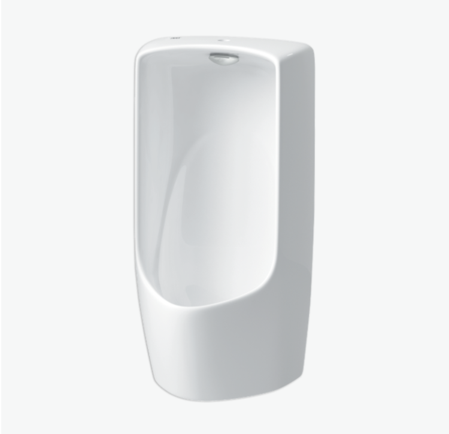
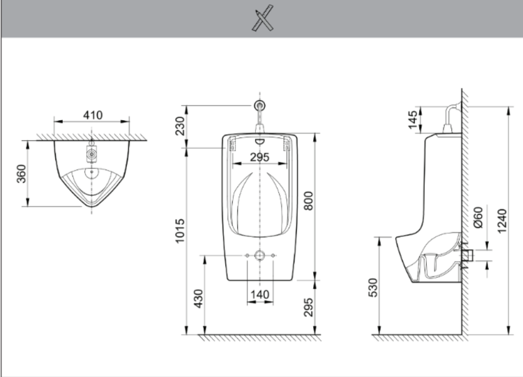

Bồn tiểu nam U-411V là sự kết hợp lý tưởng giữa kích thước sử dụng thoải mái, kiểu dáng hiện đại và hiệu suất vận hành tối ưu, hoàn toàn phù hợp với các công trình kiến trúc hiện đại như văn phòng cao cấp, khu thương mại sầm uất, tòa nhà cao tầng,...Thiết kế cỡ lớn, kiểu dáng treo tường sang trọngBồn tiểu nam U-411V sở hữu dạng treo tường tinh tế, giúp giải phóng không gian sàn nhà, tạo cảm giác phòng vệ sinh luôn rộng rãi và sạch sẽ. Thiết kế này không chỉ nâng cao tính thẩm mỹ mà còn hỗ trợ việc dọn dẹp khu vực sàn dễ dàng và nhanh chóng khi loại bỏ các góc khuất thường tích tụ bụi bẩn và ẩm mốc.Với kích thước lớn 360 x 410 x 808, U-411V giúp hứng và xả chất thải hiệu quả, giảm thiểu tình trạng nước bắn ra ngoài, từ đó duy trì sự khô ráo cho khu vực xung quanh.Chất liệu sứ cao cấpBồn tiểu U-411V được làm từ chất liệu sứ cao cấp với độ bền vượt trội và khả năng chống trầy xước, ăn mòn cao. Bề mặt sứ nhẵn bóng giúp sản phẩm luôn duy trì vẻ ngoài sáng đẹp và sạch sẽ, ngay cả trong môi trường sử dụng thường xuyên.Hiệu suất vận hành ổn địnhBồn tiểu nam U-411V được tối ưu hóa để hoạt động hiệu quả trong dải áp lực nước từ 0.07 - 0.75 MPa. Với phạm vi áp lực rộng này, sản phẩm có thể lắp đặt ở nhiều công trình, không gian khác nhau khi đảm bảo hiệu suất xả sạch trong mọi tình huống, bất kể áp lực nước thấp hay cao.Ngoài các ưu điểm trên, U-411V còn sở hữu đầu phun rửa và gioăng cao su đi kèm khi bạn mua sản phẩm tại INAX. Đây là hai bộ phận quan trọng trong quá trình lắp đặt và vận hành sản phẩm, cụ thể:Đầu rửa được thiết kế chính xác để phân bổ dòng nước hiệu quả, đảm bảo mọi lần xả đều đạt độ sạch tối đa.Gioăng cao su nối tường chất lượng cao, giúp cố định bồn tiểu chắc chắn trên tường và đảm bảo sự kín khít hoàn hảo, ngăn ngừa rò rỉ nước khi sử dụng.Bồn tiểu nam INAX U-117V là lựa chọn đầu tư thông minh cho những không gian cần sự tiện nghi, vệ sinh và thẩm mỹ cao. Kích thước lớn mang lại trải nghiệm thoải mái, trong khi chất liệu sứ cao cấp và khả năng vận hành ổn định là bảo chứng cho chất lượng chuẩn mực của thiết bị vệ sinh INAX.Để được tư vấn chi tiết về sản phẩm, khả năng lắp đặt hoặc hỗ trợ bảo hành, Quý khách vui lòng liên hệ Hotline tư vấn và bảo hành: 18006633.Bản vẽ bồn tiểu nam U-411VFile hướng dẫn lắp đặt chi tiết: HDLD AU-411V U-411V.pdfThông số kỹ thuậtChất liệuSứDạngTreo, cỡ lớnKích thước360 x 410 x 808 mm (Sâu x Rộng x Cao)Đặc điểm- Áp lực nước 0.07 - 0.75 MPaThương hiệuINAXKhác- Sản phẩm đã bao gồm đầu phun rửa, gioăng cao su nối tường - Hotline tư vấn và bảo hành: 18006633
Bồn tiểu nam U-411V
Bồn tiểu thương hiệu INAX.
Đã cập nhật danh sách yêu thích.
DANH MỤC: Bồn tiểu
MÃ SẢN PHẨM: U-411V
DEPTH: 360mm
HEIGHT: 800mm
WIDTH: 410mm
Bồn tiểu nam U-411V là sự kết hợp lý tưởng giữa kích thước sử dụng thoải mái, kiểu dáng hiện đại và hiệu suất vận hành tối ưu, hoàn toàn phù hợp với các công trình kiến trúc hiện đại như văn phòng cao cấp, khu thương mại sầm uất, tòa nhà cao tầng,...Thiết kế cỡ lớn, kiểu dáng treo tường sang trọngBồn tiểu nam U-411V sở hữu dạng treo tường tinh tế, giúp giải phóng không gian sàn nhà, tạo cảm giác phòng vệ sinh luôn rộng rãi và sạch sẽ. Thiết kế này không chỉ nâng cao tính thẩm mỹ mà còn hỗ trợ việc dọn dẹp khu vực sàn dễ dàng và nhanh chóng khi loại bỏ các góc khuất thường tích tụ bụi bẩn và ẩm mốc.Với kích thước lớn 360 x 410 x 808, U-411V giúp hứng và xả chất thải hiệu quả, giảm thiểu tình trạng nước bắn ra ngoài, từ đó duy trì sự khô ráo cho khu vực xung quanh.Chất liệu sứ cao cấpBồn tiểu U-411V được làm từ chất liệu sứ cao cấp với độ bền vượt trội và khả năng chống trầy xước, ăn mòn cao. Bề mặt sứ nhẵn bóng giúp sản phẩm luôn duy trì vẻ ngoài sáng đẹp và sạch sẽ, ngay cả trong môi trường sử dụng thường xuyên.Hiệu suất vận hành ổn địnhBồn tiểu nam U-411V được tối ưu hóa để hoạt động hiệu quả trong dải áp lực nước từ 0.07 - 0.75 MPa. Với phạm vi áp lực rộng này, sản phẩm có thể lắp đặt ở nhiều công trình, không gian khác nhau khi đảm bảo hiệu suất xả sạch trong mọi tình huống, bất kể áp lực nước thấp hay cao.Ngoài các ưu điểm trên, U-411V còn sở hữu đầu phun rửa và gioăng cao su đi kèm khi bạn mua sản phẩm tại INAX. Đây là hai bộ phận quan trọng trong quá trình lắp đặt và vận hành sản phẩm, cụ thể:Đầu rửa được thiết kế chính xác để phân bổ dòng nước hiệu quả, đảm bảo mọi lần xả đều đạt độ sạch tối đa.Gioăng cao su nối tường chất lượng cao, giúp cố định bồn tiểu chắc chắn trên tường và đảm bảo sự kín khít hoàn hảo, ngăn ngừa rò rỉ nước khi sử dụng.Bồn tiểu nam INAX U-117V là lựa chọn đầu tư thông minh cho những không gian cần sự tiện nghi, vệ sinh và thẩm mỹ cao. Kích thước lớn mang lại trải nghiệm thoải mái, trong khi chất liệu sứ cao cấp và khả năng vận hành ổn định là bảo chứng cho chất lượng chuẩn mực của thiết bị vệ sinh INAX.Để được tư vấn chi tiết về sản phẩm, khả năng lắp đặt hoặc hỗ trợ bảo hành, Quý khách vui lòng liên hệ Hotline tư vấn và bảo hành: 18006633.Bản vẽ bồn tiểu nam U-411VFile hướng dẫn lắp đặt chi tiết: HDLD AU-411V U-411V.pdfThông số kỹ thuậtChất liệuSứDạngTreo, cỡ lớnKích thước360 x 410 x 808 mm (Sâu x Rộng x Cao)Đặc điểm- Áp lực nước 0.07 - 0.75 MPaThương hiệuINAXKhác- Sản phẩm đã bao gồm đầu phun rửa, gioăng cao su nối tường - Hotline tư vấn và bảo hành: 18006633
DANH MỤC: Bồn tiểu
MÃ SẢN PHẨM: U-411V
DEPTH: 360mm
HEIGHT: 800mm
WIDTH: 410mm